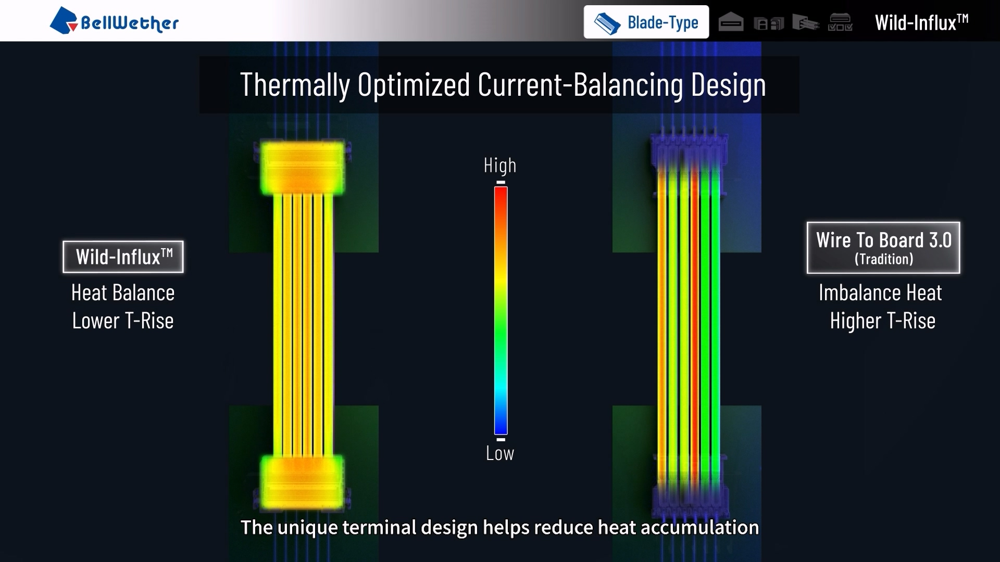
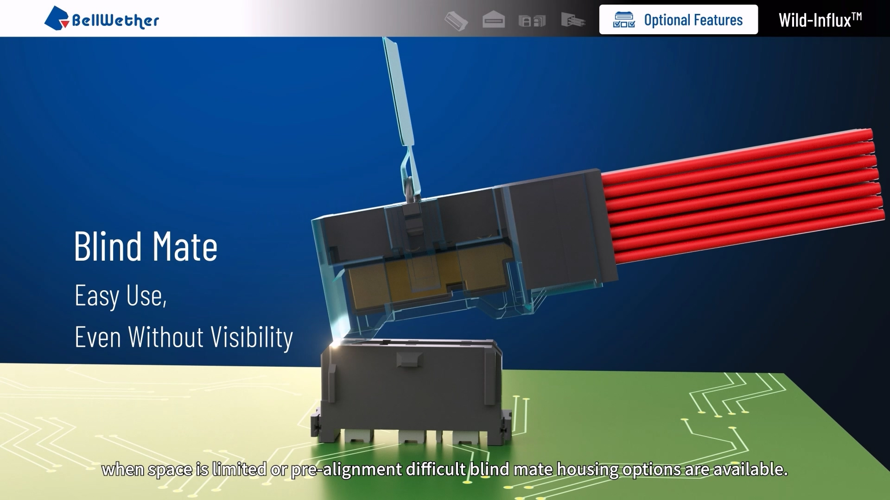

Wild‑Influx™ (High-Power Connectivity)
High-Power Connectivity · Technical Storytelling & Production Management
Electrical and thermal design concepts need more explanation than a specification sheet alone can provide. The task was to make those concepts clear to customers.
Developed content plans and scripts with PM and engineering input, coordinated external production partners and reviewed technical accuracy and visual quality.
The core message came first, in discussion with product and technical teams. Current balancing, connector architecture and temperature-rise behavior then became the subjects of the visual narrative.
Built product assets for reuse across trade shows, digital channels and sales communication, with a clear goal: make the technical advantages easier to understand.
Technical accuracy required direct review with PMs and engineers. Managing the external production partners alongside those reviews kept delivery on schedule.